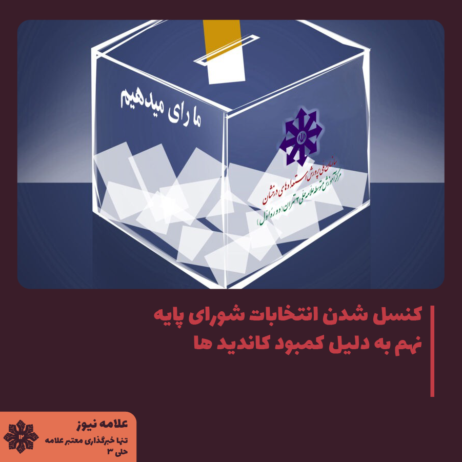

بنا بر اطلاعاتی که به دست ما رسیده است آقای قاسمیان، مشاوره پایه نهم در جواب به این موضوع که خیلی خبری از انتخابات شورا (که طبق تقویم اجرایی قرار بود یکشنبه 24 ام برگزار شود) نمی آید گفتند: "چون تعداد ثبت نامی کمه خیلی احتمالا سراغ انتخابات نریم". بنظر میرسد که از هر سه کلاس 301، 302 و 303 تنها 3 نفر کاندید شده اند.